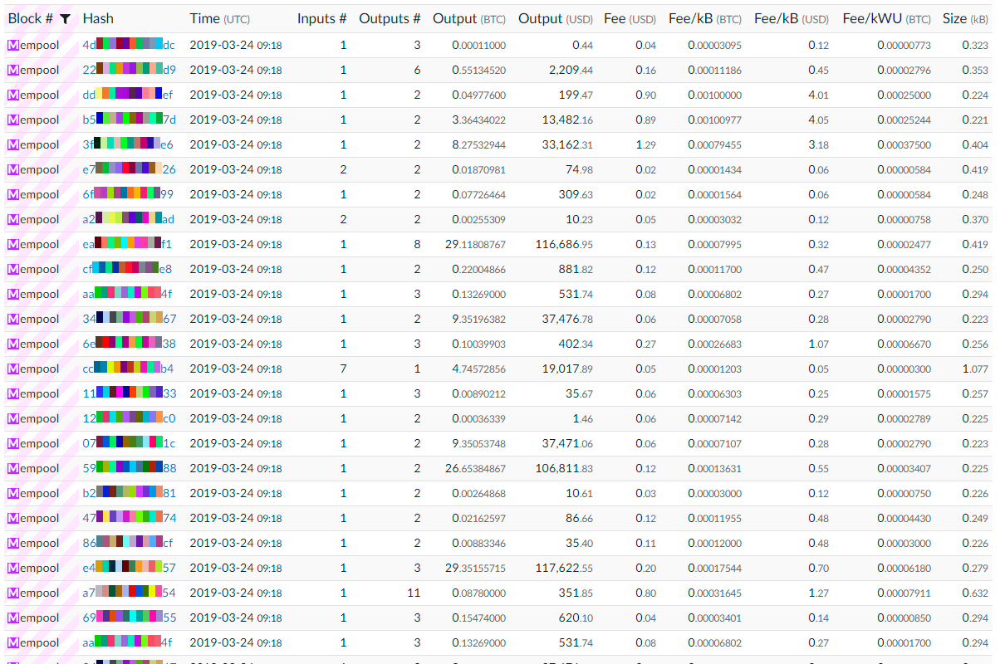
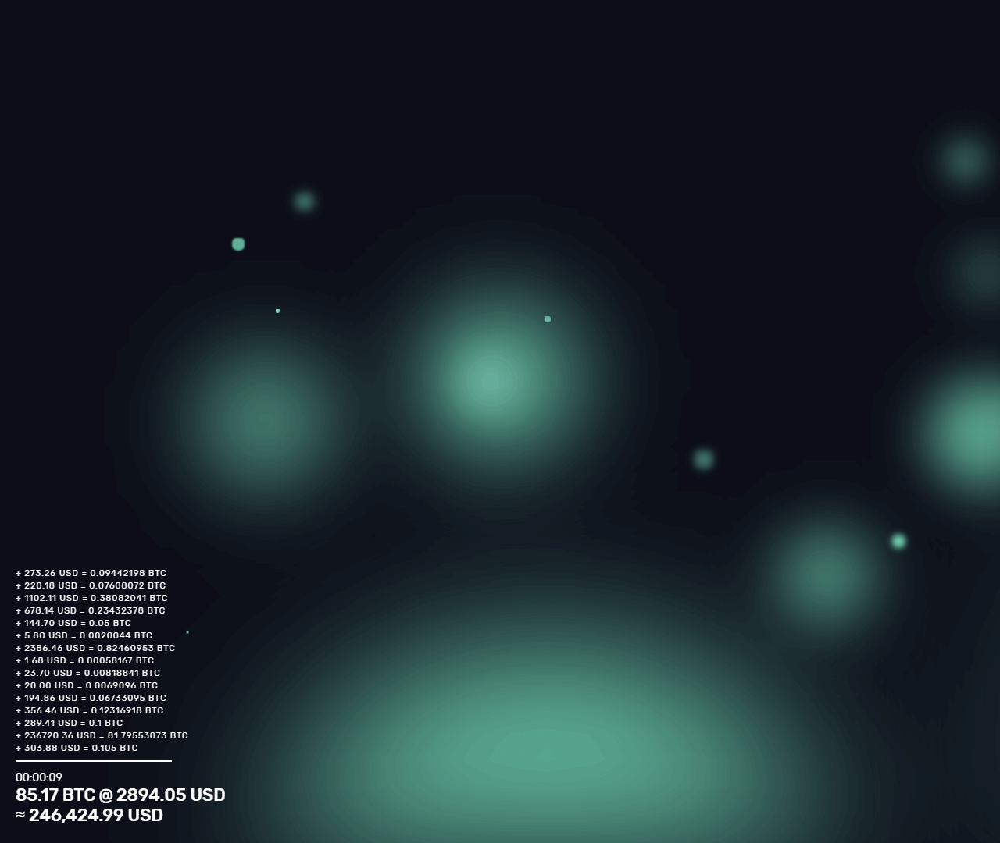
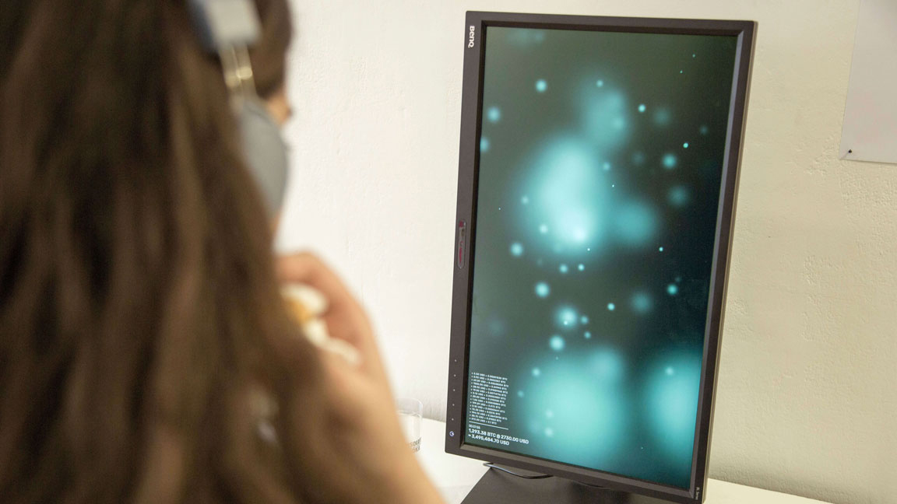

[A]Live Cash
— Wealth is no longer material
> Abstract
[A]Live Cash is an real-time audiovisual installation that explores the data behind Bitcoin transactions. The web-based visualization receives transaction data every time one occurs inside the bitcoin blockchain network, and the information is transformed into sounds and shapes that are determined by time of occurrence and the corresponding value of the transaction. Green spheres float in a dark background in seamlessly random orders along with eerie sounds, creating an delicate atmosphere that displays a living organism in constant change.
> Made With
HTML, CSS, JavaScript, Jquery, JSON, Blockchain API & Fruity Loops.
> Keywords
Crypocurrency, Bitcoin, Blockchain, open data, data visualization, real-time, immateriality of money.
> Links
Live Project*
* Project with high demand of GPU processing power, might crash the browser if there's a high flow of transactions and/or if the GPU has not enough processing power.
> Introduction
Bitcoin is a peer-to-peer cryptocurrency that runs on a distributed open ledger called blockchain that keeps records of every on-block transaction. Each transaction is concluded when it’s inserted into a block, and a block is formed when a miner has dedicated enough computational power to solve specific mathematical calculations. While those calculations are being processed, the order of the transaction is submitted to the network and waits to be inserted into a block. This wait time is called mempool (Nakamoto, 2008).
This project captures the information broadcasted to the mempool, visualizing in real-time every pending transaction to be inserted into a block. Each transaction withholds public information such as the amount of bitcoins being transacted, their origin and where they are going. Since the blockchain works on a cryptographic algorithm, the movements can be publicly verifiable, but not the user identity.
This project is programmed to capture a transaction each time one is broadcasted as well as the amount of bitcoin being transacted. That information is visualized as a sphere whose radius and blurriness correspond to the current monetary value of that transaction.

Mempool public information on Blockchair.com
> Concept
“Bitcoin represents a fundamental transformation of money. An invention that changes the oldest technology we have in civilization. That changes it radically and disruptively by changing the fundamental architecture into one where every participant is equal. Where transaction has no state or context other than obeying the consensus rules of the network that no one controls. Where your money is yours. You control it absolutely through the application of digital signatures, and no one can censor it, no one can seize it, no one can freeze it. No one can tell you what to do or what not to do with your money. It is a system of money that is simultaneously, absolutely transnational and borderless. We’ve never had a system of money like that.” (Antonopoulos, Andreas M., 2016)
The bitcoin network is a developing system still in its early stages, dependant on speculation, mainstream adoption, development of related applications, government legislations, and so forth. So the main idea was that its visualization could be interpreted as a living organism. Accordingly, the visual output of the project relates directly with the image of a supersized view of bloodstream, watching cells that pass by randomly and naturally. If there is no cell flowing, there is probably something wrong.
The same goes for this project, if no element appears on the screen for a long period of time, it could imply that either every single person that was trading bitcoin as ceased to do so, or the network is, somehow, not following the core rules and thus not acting properly. It could also mean that the computer that is running this visualization is going through some technical problem or that the internet is down.
The bigger the transaction is, the bigger are the shapes and the duration of the accompanying sound, which becomes heavier and more intense. When the transaction is small, the sound is sharp, fast and the sphere is around a couple pixels. The presence of the shapes is attributed to large sum transactions due to its importance in the bitcoin market and its possible influence on the price.

Real-time decoding of incoming data into tangible values, listing all transactions, converting BTC to USD and displaying how much was transacted since the page was opened.
> Implementation
The project uses two different API’s from blockchain.com, one where it gets the current price, and another that sends an JSON output of every transaction inserted into the mempool. A simple .js code captures the information of interest inside every JSON output that is the amount transferred in each transaction, and multiplies that value with the current U.S. Dollar price. Each time a transaction is emitted, a few orders are compiled:
— First a single audio file from thirty-four is selected and played. The selection is based on ranges of price, going from 0,01$ to 0,25$ to more than 250.000$;
— At the same time, the sphere is created using HTML and CSS in a random position of the screen with initial opacity value of zero, and start moving into a direction as well as the opacity slowly becomes 100, to then turn back to zero when is time for the sphere to disappear;
— The log on the left area of the screen keeps track of all transactions, displaying the bitcoin amount, the corresponding value;
— The bigger value below the log is the sum of all transaction that happened while the page was open, showing a timer, a bitcoin total, and a U.S. Dollar total.
Due to the possible amount of transactions, and its eventual enormous sizes, the project is programmed to refresh and start clean every few minutes to avoid memory leaks and computer crashes. As such, the longer the project is running, the more information it compiles, making it difficult for a normal computer to store all that information in the cache memory for extended periods of time.
> Results
Since this is a web-based project, the presentation can be shown in various forms. It can be displayed in any normal display, as well as in a projection. The size and scale are adaptable to the screen’s proportion, as well as the continuous display of the project, where it is solely limited on the amount of RAM memory available on the running computer, meaning that it could be displayed for several straight hours without any interruption provided that there is enough memory. The sound can be listened through headphones for a individual experience, or depending on the size of space, speakers can also be used in order to promote a more collective experience. In terms of setting, the aim of the project is to create a contemplative experience of the dynamics of bitcoin transactions, such as an ambient where the observer can be immersed in order to experience this market flow.
This project was part of a collective exhibition Called “the data, the web, the app” in 2017. The proposals developed under the subject of Project II of the Master in Communication Design and New Media are conceived as experimental approaches to communication shaped by the current manifestations of new media. They explore their creative possibilities approaching themes such as the proliferation of data and their meaning or expression.
Frames from the website in a 16 by 9 monitor in landscape orientation.

Exhibition of the project in a 16 by 9 monitor in portrait orientation in the 2017 “the data, the web, the app” exposition.
> References
Nakamoto, Satoshi. Bitcoin: A Peer-to-Peer Electronic Cash System. 2008. https://bitcoin.org/bitcoin.pdf.
Antonopoulos, Andreas M.. The Internet of Money: talks by Andreas M. Antonopoulos. Middletown, DE: Merkle Bloom LLC, 2016.